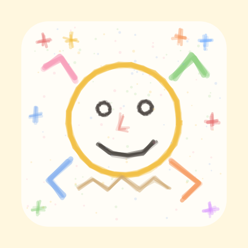

AI지원담당 실제 화면 모사친구 목록 → 채팅 → 담당별 기능 패널 순서로 체험하세요.
웹 데모 · 실제 처리 없음
AI지원담당
친구
기본 설정은 로컬 서비스를 사용합니다. 이 웹 화면은 실제 서비스를 연결하지 않습니다.
김법률
법률지원
왼쪽에서 예시 질문을 선택하세요.
왼쪽에서 데모 질문을 선택하면 해당 친구가 표시됩니다. 더블클릭 또는 Enter로 채팅을 여세요.

로컬 업무 메신저
AI지원담당AI지원담당
기본 설정은 로컬 서비스를 사용합니다. 이 웹 화면은 실제 서비스를 연결하지 않습니다.
법률지원
왼쪽에서 예시 질문을 선택하세요.
왼쪽에서 데모 질문을 선택하면 해당 친구가 표시됩니다. 더블클릭 또는 Enter로 채팅을 여세요.